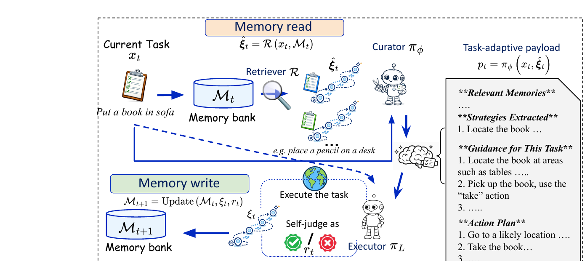
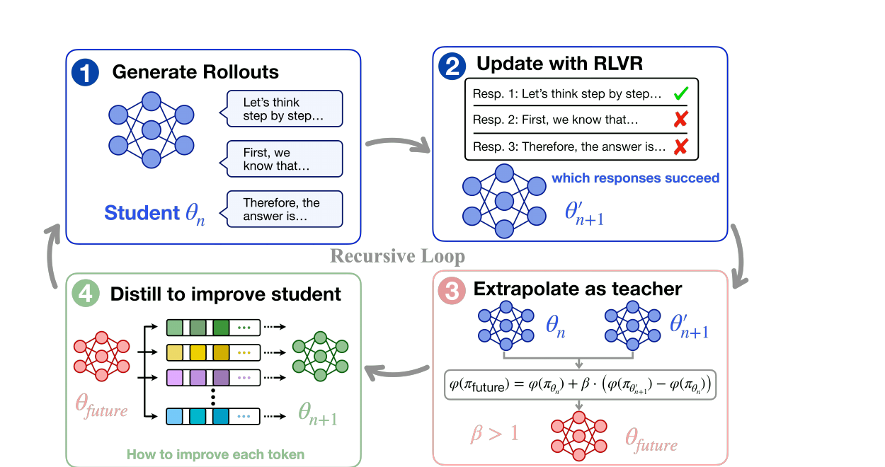
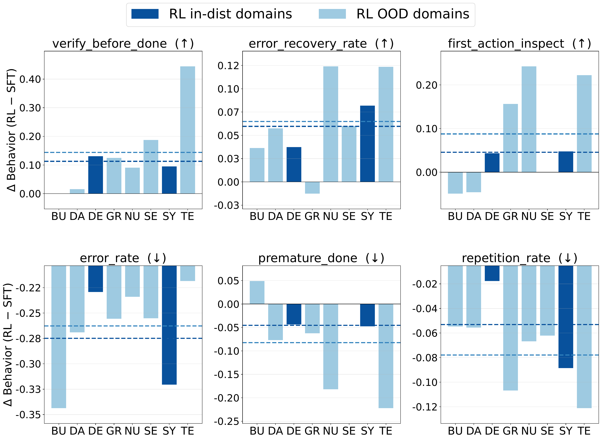
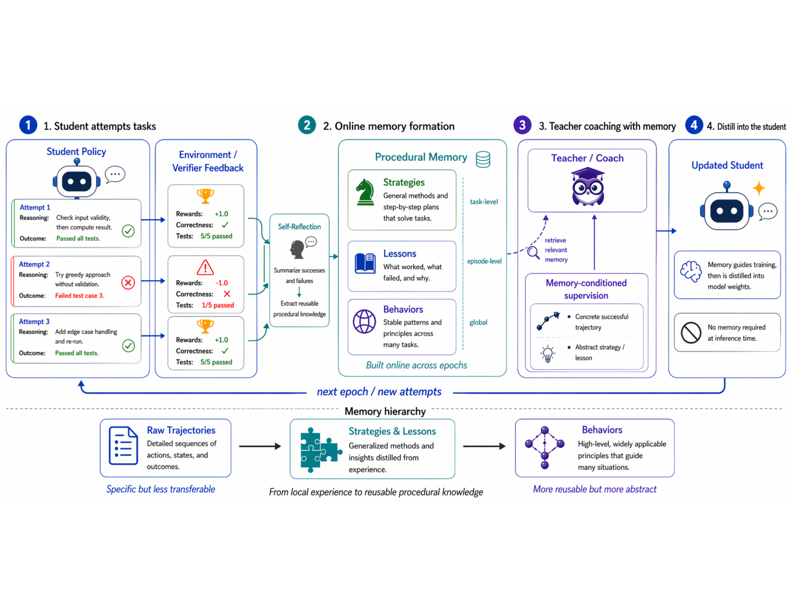

Efficiency of On-Policy Distillation
Making on-policy distillation cheaper and faster while preserving teacher quality and student gains.
We aim for agents that learn from the work they do, bring useful lessons to unfamiliar tasks and environments, and keep improving as experience accumulates.
TransferBetter on unfamiliar tasks
PersistenceGains that last beyond one episode
AutonomyLess task-specific guidance over time
Our approach links fast adaptation through memory with lasting model improvement. Better models then produce richer experience for the next round.
Keep trajectories and reusable strategies. Curate what the next task needs.
Learn from verified outcomes and memory-guided teaching.
Each addresses a bottleneck between raw experience and transferable capability.
Which experiences should we keep, and when should we turn them into guidance for a new task?
Explore papers 02 · What helps this student?What should a teacher reveal, and how can feedback improve the guidance it gives?
Explore papers 03 · What becomes capability?How do we use the student's own attempts to turn useful guidance into model behavior?
Explore papersStudy rewards, environments, and training stages so the behaviors we reinforce transfer beyond one task.
No memory path — experience ends with the episode.
Environment success across every available setting. Epoch 0 is the canonical no-skill baseline.
Loading experiment summary…
No completed production run is available for this configuration.
Papers on self-improving agents, newest first.

Learning to Curate Task-Adaptive Memory for LLM Agents
Keeps past experience whole and curates a short, task-adaptive briefing at read time — when the next task is known — instead of compressing memory too early.

Recursive Improvement via Self-Extrapolating Policy Distillation
Builds a synthetic future teacher from the model’s own RLVR trajectory via self-extrapolation, then distills dense token-level targets — no external teacher required.

Learning Generalizable Behaviors for Terminal Agents
Filters noisy synthetic terminal environments and shapes rewards so RL reinforces transferable multi-turn behaviors — using <30% of TMax data for larger gains.

Procedural Memory Distillation: Online Reflection for Self-Improving Language Models
Converts cross-episode signals into reusable procedural memory and distills it into the policy’s weights during training. Memory is a training scaffold, so inference is memory-free.

Learning from Language Feedback via Variational Policy Distillation
Reframes on-policy self-distillation as variational EM: the teacher is refined on trajectory outcomes, then distilled into the student’s rollouts, with a dynamic trust region inside a shared-weight network.
Making on-policy distillation cheaper and faster while preserving teacher quality and student gains.
Next-generation procedural memory distillation with richer memory abstractions and stronger co-evolution.
How reinforcement learning, supervised fine-tuning, and on-policy distillation interact — and when to combine them.